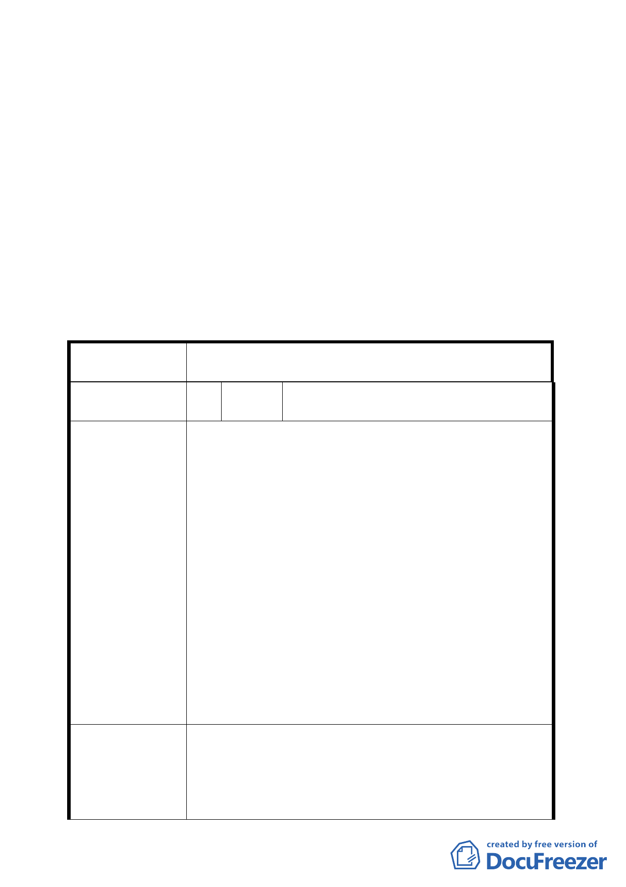

範事項，請併同前述公園位置、開放空間系統予以檢討。
（五）配合「臺北好好看」之政策期程，請於計畫書內載明本案
如無法於 99 年 9 月 30 日前開工，除不適用「2010 年臺北
好好看」之容積獎勵外，並應回復為原都市計畫。
（六）另本案基地之建築高度、量體、造型與特殊都市生活體驗
空間之老舊廠房設計等內容，併同前述事項考量，並授權
由「臺北市都市設計及土地使用開發許可審議委員會」審
議確認。
三、 公民或團體所提意見審決如後附綜理表。
臺北市都市計畫委員會公民或團體所提意見綜理表
案
名
變更「臺北市士林區光華段士林紙廠土地」第三
種商業區（特）細部計畫案
編
號１
陳情人
劉俐音 君、吳浤榮 君、陳中和里長、楊
錦宗里長
1. 將旅館挪至計畫區中央，與操場區域交換；以保持原
公教住宅日照環境品質。
2. 路幅寬度應規劃雙巷道規定寬度，以保障用路人權
益。
3. 公園用地部分規劃為商三(特)後，深度變小，規劃之
綠化及設施利用率不佳。
4. 請將士林街福德宮併入都市更新範圍。
陳
情
理
由
5. 建議於公園用地範圍內，設置區民活動中心，做為民
眾活動休憩使用。
6. 原計畫之公園用地位於基地西側，集中且完整，屬開
放性空間；本計畫變更公園位置於商場中央，成為商
業大樓中庭，靠基河路側出口過小，影響市民整體活
動空間及防救災通路。
7. 基地北側舊有福德路為既成道路，供公眾通行多年，
如併入整體開發，應規劃替代道路，以免造成附近居
民出入不便及交通衝擊。
1. 士林國小南側與本開發案兩者間之道路寬度應取一
致，避免雙向來車與行人發生意外事故。
建 議 辦 法 2. 將深度過深之公園地適當調整使用面積。
3. 請士林紙廠回饋設置區民活動中心。
4. 為保留公園原規劃位置完整性，不同意變更。
- 33 -